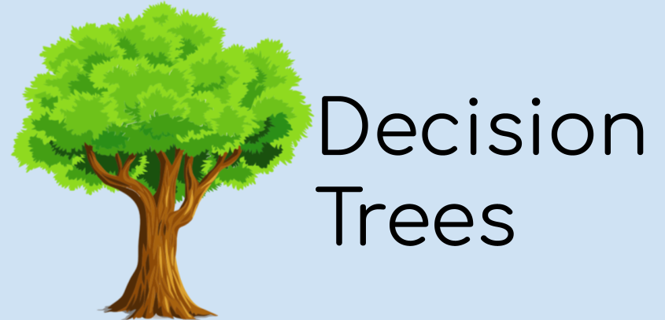

Machine Learning Basics: Decision Tree Algorithms
By Harrison Chachko
Machine learning consists of various core concepts and fundamentals, with the development of many algorithms being completely necessary to categorize data or predict various outcomes. One category of algorithms that is most commonly used are decision tree algorithms, which are utilized to construct various types of trees to filter data through. The purpose of developing any type of decision tree is to intake a dataset with key information associated with it and then filter that data to determine categories or predictions that data can be identified with.
Decision trees are mainly associated with problems that involve numerous cause and effect scenarios. For example, if you wanted to write a program that categorizes certain breeds of dogs based off “yes” and “no” responses, a decision tree would be perfect for the task. The algorithm would analyze the dataset using various questions surrounding a dog’s size, color, weight, and other key details until it can identify an unique dog with all of those traits in mind. Each question represents a node in the tree, with the branches acting as responses. As you traverse further in the tree, the data being filtered by each node becomes much more specific and targeted towards making an accurate assumption or prediction, until a node without any children is reached, making it the final node. At that point, the final node represents the data being filtered to the fullest extent by the decision tree, allowing for a prediction or categorization to be made.
Sample Decision Tree:
Photo: https://elf11.github.io/2018/07/01/python-decision-trees-acm.html
Decision trees are also commonly utilized in the gaming industry, ranging from remembering the player’s decisions that impact the narrative eventually leading to different outcomes, or the behavior of enemies when the player interacts with them. Another use of the trees include determining a person’s eligibility for events/programs, which can range from a student applying for a scholarship with certain requirements or a bank’s loan program based on a person’s income. The data obtained from decision trees can be used for a practice known as data mining.
What exactly is data mining, and how does it relate to decision trees?
To put it simply, data mining is the act of ingesting large datasets and finding patterns within them. By finding these similarities, users can identify groups of data based on shared traits for various practical uses, such as targeted marketing, patient treatment, etc. Decision trees complement data mining due to the fact that they are easy to understand from a high-level perspective, as it appears that the input data is merely being filtered down by each node and branch.
Key practices used by decision trees:
Decision trees commonly utilize three key methods of validating the filtering of the input data: entropy, information gain, and the Gini Index (aka Gini Impurity). I’ll describe each method of measuring data from a high-level perspective, as each approach has highly detailed innerworkings associated with them:
1) Entropy:
Input data is plugged into the mathematical formula for Entropy, with the output being analyzed to determine if the data associated with the current node is accurate, validating that the data has been filtered correctly. Therefore, this measure of data is known for measuring purity/disorder. The lower the value of entropy, the more pure/accurate the data is.
Photo: https://datascience.foundation/sciencewhitepaper/understanding-decision-trees-with-python
2) Information Gain
Since entropy is ultimately a prediction made within decision tree algorithms, that implies that the results achieved are not entirely certain, meaning there is room for error. To eliminate, or at the very least reduce the amount of uncertainty obtained by calculating entropy, the information gain formula is used. The result represents a smaller entropy value, meaning a value that is much more pure.
Photo: https://towardsdatascience.com/entropy-how-decision-trees-make-decisions-2946b9c18c8
3) Gini Index/Impurity
The Gini Index (sometimes referred to as Gini Impurity) is used to determine the probability of an incorrect classification of data belonging to a particular class when randomly selected. Similarly to entropy, the probability given by the Gini Index ranges from 0 to 1, with the greater value closer to 1 meaning the higher chance of the data being a misinterpreted classification.
Photo: https://www.learnbymarketing.com/481/decision-tree-flavors-gini-info-gain/
Using all three of these measures and taking their results into account, the algorithm would then make the best prediction and create the next node in the tree, with the process continuing until the data is filtered enough to the point that the creation of further nodes is unnecessary. Many decision tree algorithms utilize all three of these practices, but there are some that substitute one or more of these methods in favor of their own preferred approach.
The Two Types of Decision Trees:
Despite being easy to understand from a high-level, there are actually two main variations of decision trees, each with their own method of predicting certain results. Classification and Regression Trees are both used to analyze the input dataset, but differ in the process of branching their data and their final results.
1) Classification Trees:
The simpler of the two to understand on a fundamental level, as this type of tree branches in a binary sense. The input data either meets the conditions of the node, or it simply does not, then branches accordingly. These trees are used to categorize data with the datasets given.
2) Regression Trees:
Contrary to branching based on binary criteria, Regression Trees operate based on whether the input data is continuous or not. These trees are used to predict possible outcomes with the datasets given.
Key Decision Tree Algorithms:
ID3 (Iterative Dichotomiser 3):
An algorithm, created by Ross Quinlan, used to create a decision tree starting with the root on top, then branching downwards with each node and decision.
C4.5:
The C4.5 is actually the successor to the ID3, both created by Ross Quinlan. The objective of the algorithm is the same as ID3’s: to construct a top-down decision tree. The key improvement that Quinlan included in the C4.5 algorithm was the introduction of pruning: the process of identifying branches that would unnecessarily filter incoming data, which left unchecked would increase the chance of a higher Gini Index. Another change introduced with C4.5 is that instead of using information gain to assist in choosing the best branch to traverse, the algorithm utilizes the gain ratio measure to improve accuracy. A downside to this approach is the mandatory inclusion of rule sets for the input data, as it is heavily used in the branching process.
CART (Classification and Regression Tree):
An algorithm that constructs both classification and regression trees, created by Leo Breiman. Acts very similarly to both ID3 and C4.5, with the main difference being that CART does not need the data formatted into rulesets, instead utilizing recursive numerical splitting to assist with branching.
Chi-square Automatic Interaction Detection:
Created by Gordon Kass, the most distinctive feature associated with this approach is the fact that branches are not limited by binary branches. Instead, any node in the decision tree can have any number of branches to traverse to. Most commonly used for regression trees.
MARS:
An algorithm that requires minimal tweaking to the input dataset before use and can handle both classical and regression types of data, created by Jerome Friedman.
If you would like to learn more about decision tree algorithms, here are some links that further explain the concept in further detail!
https://www.geeksforgeeks.org/decision-tree-introduction-example/
https://datascience.foundation/sciencewhitepaper/understanding-decision-trees-with-python
https://medium.com/analytics-steps/understanding-the-gini-index-and-information-gain-in-decision-trees-ab4720518ba8
https://towardsdatascience.com/the-complete-guide-to-decision-trees-28a4e3c7be14